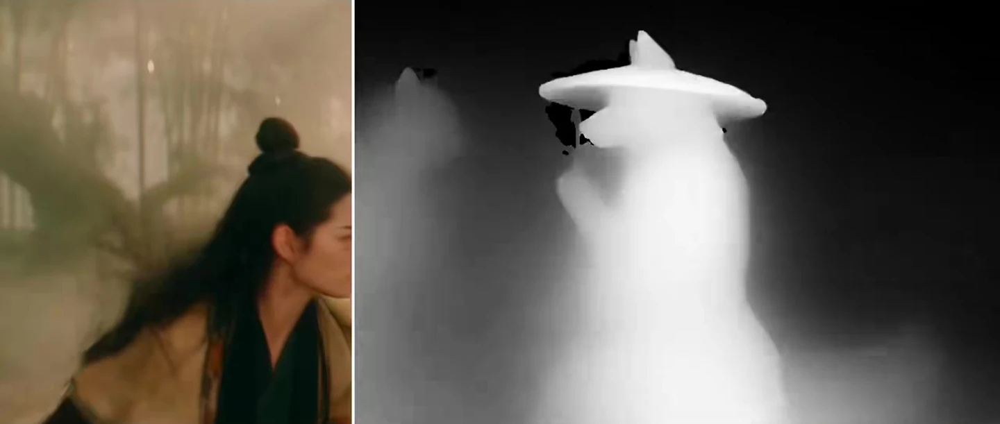
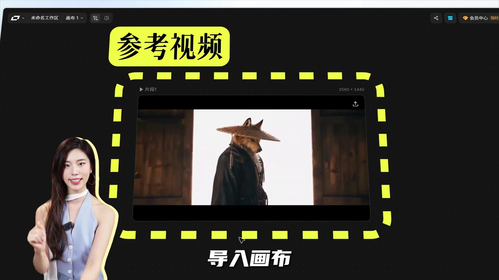
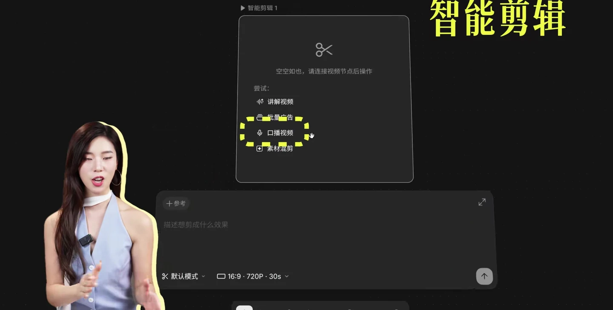
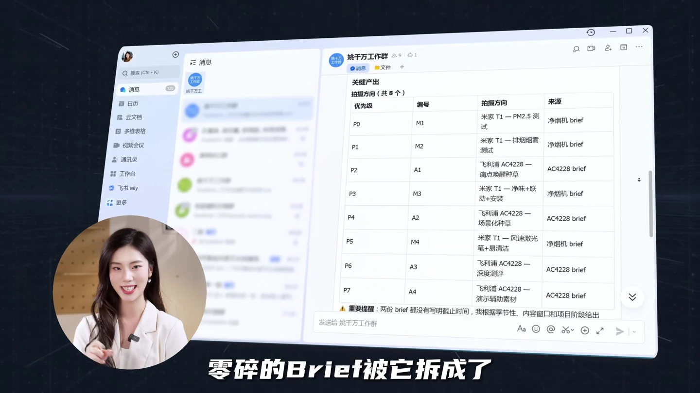
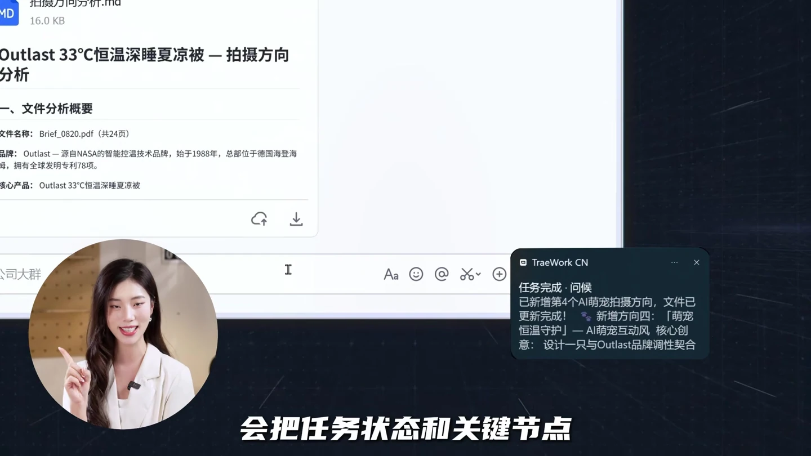
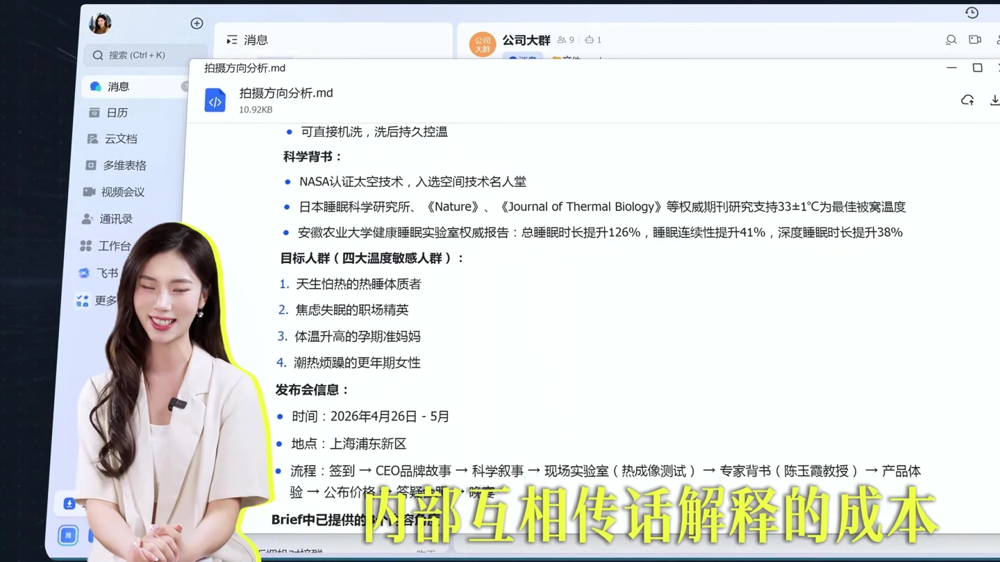
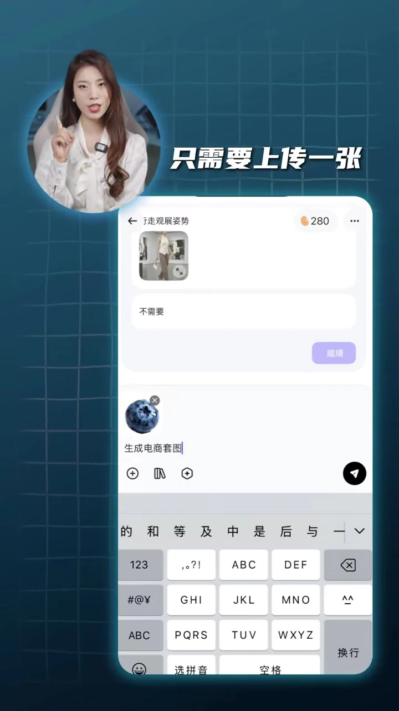

02内容
把历史作品梳理成系列
让每条内容都回答一个具体问题
梳理历史作品→归入内容系列→优化单条结构
观众问题怎样把想法做成 AI 短片
从画面效果 到能跟着做的制作路径
01先看效果

一比一复刻进自己的视频
先放原片与灰模对照
让观众直观看见镜头效果
02拆开方法

参考视频导入画布动作提取
展示参考视频的导入位置
把操作入口和关键步骤讲清楚
03串起后续制作

智能剪辑字幕画面包装
继续演示剪辑与包装
把单个镜头接到成片流程
观众问题怎样在聊天框里把工作推进完
从介绍工具 到看见输入 过程与结果
01先看效果

零散资料整理表格
先展示资料整理后的结果
把提效的价值落到具体画面
02拆开方法

提取需求关键节点任务状态
展示任务状态与节点提取
让处理过程和输出都看得见
03延伸使用场景

群内协作同步方案持续沟通
补充多人协作的使用场景
把个人提效延伸到团队工作
观众问题一张商品图怎样变成电商素材
从商品图片 到可使用的详情与搭配内容
01先看效果
电商套图成组展示
开头并排展示多种套图
让观众先看到完整产出
02拆开方法

上传图片描述需求
用屏幕录制展示上传步骤
把商品图如何输入讲清楚
03讲清交付内容
商品详情页场景应用
展示实际生成的详情页
让观众知道素材能用在哪里
账号的持续价值看见 AI 能做什么也知道自己怎么做